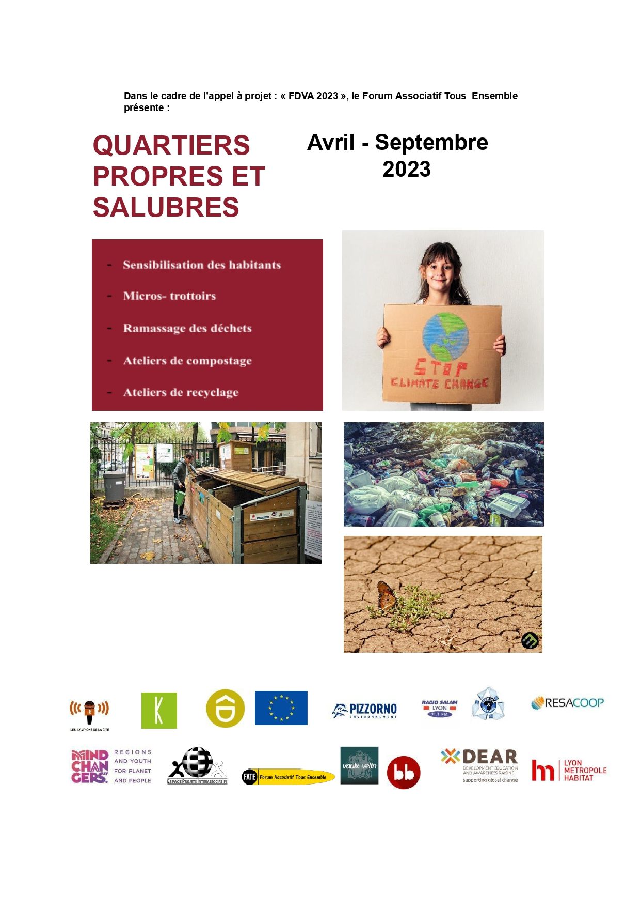
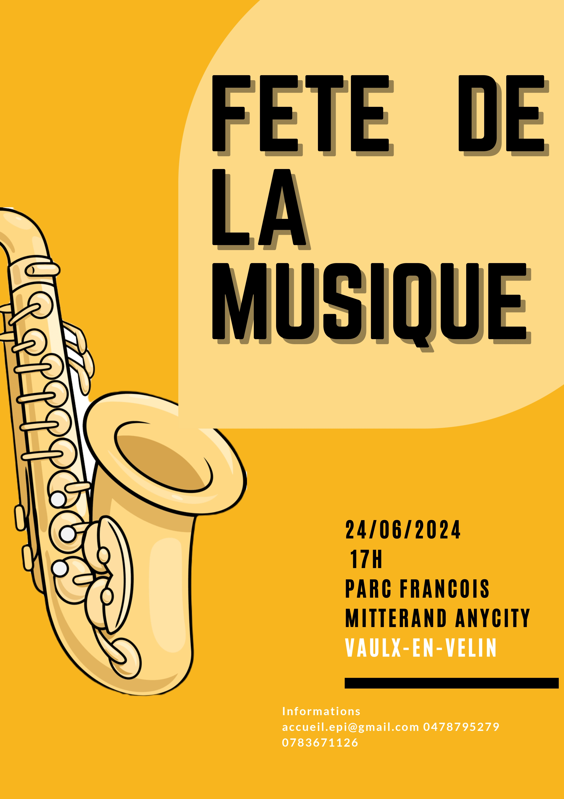
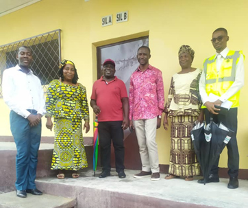
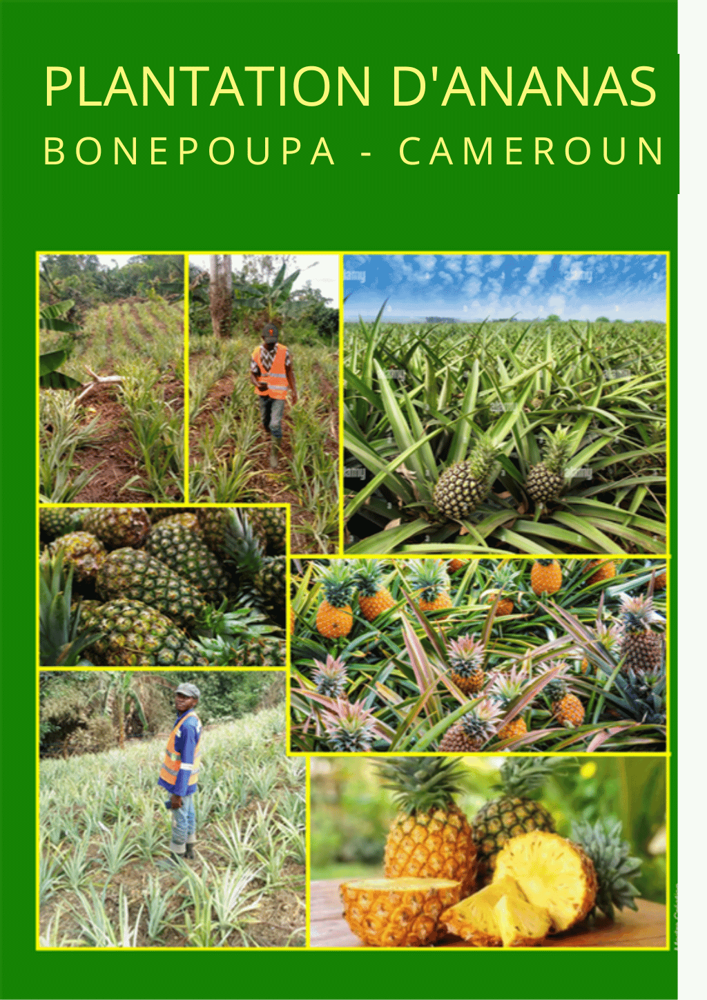
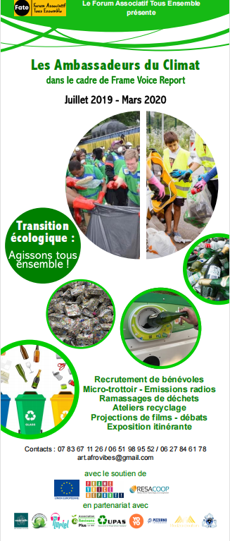
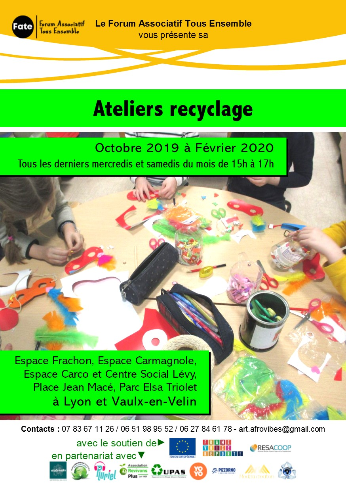
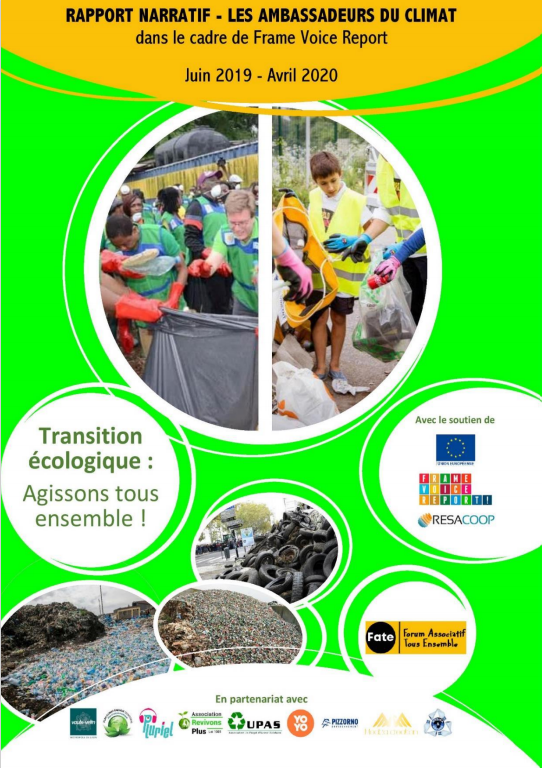

NosActions
Découvrez les actions menées par F.A.T.E. au fil des années : projets solidaires, événements culturels, campagnes de sensibilisation et missions éducatives en France et à l'international.
Actions en 2025

Des routes de l'esclavage à nos jours
Projet pour mobiliser les habitants et acteurs éducatifs autour de la mémoire de l'esclavage. Explorez l'impact économique, scientifique, culturel et sportif de la traite négrière. Projet en cours de 2024 à 2026 dans divers lieux internationaux.

Culture aux pieds des tours
Actions en 2024

Culture au pieds des tours
Activités estivales à Vaulx-en-Velin : ateliers artistiques et sportifs gratuits en pieds d'immeubles — bachata, salsa, capoeira, graffiti, basketball, boxe. Un projet collaboratif porté par le FATE pour les habitants des quartiers prioritaires.

Quartiers propres et salubres
Campagne de propreté urbaine : nettoyage collectif, ateliers de sensibilisation et implication des habitants pour renforcer le respect de l'espace public et améliorer le cadre de vie dans les zones prioritaires.

Fête de la musique 2024
Concerts gratuits, diversité artistique et ambiance festive au cœur de la ville !
Actions en 2023

Les jeunes recycleurs d'ici et d'ailleurs
Comment nos jeunes recycleurs contribuent à un avenir plus durable grâce à leur créativité et détermination. Une source d'inspiration pour la transition écologique.

Rénovation de l'école de Logbaba
Projet éducatif et humanitaire pour offrir de meilleures conditions aux élèves de l'école de Logbaba.

Création d'une plantation d'ananas à BONEPOUPA (Oct. 2022 – Avr. 2024)
Actions en 2022

Actions en 2021
Actions en 2019

Ambassadeurs du climat

Ateliers Recyclage
Atelier écologique pour apprendre les bases du recyclage et donner une seconde vie aux matériaux. Une activité ludique, créative et engagée pour toute la famille !

Ambassadeurs du climat
Actions en 2018

Actions en 2014


Forum Associatif Tous Ensemble est une structure engagée pour le vivre-ensemble, la solidarité locale et le développement d'initiatives citoyennes.
Forum Associatif Tous Ensemble © 2023 – 2026. Tous droits réservés par l'équipe FATE.